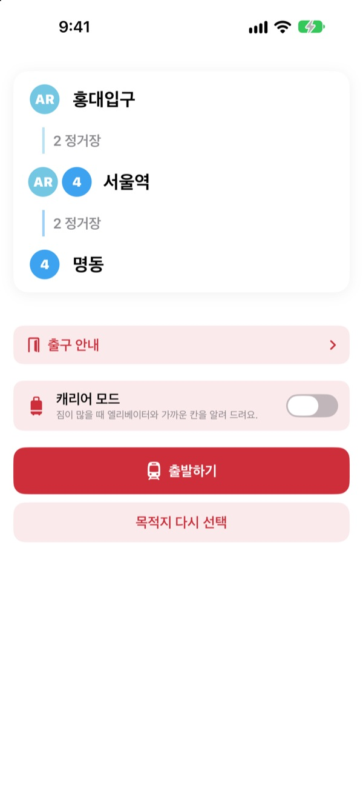
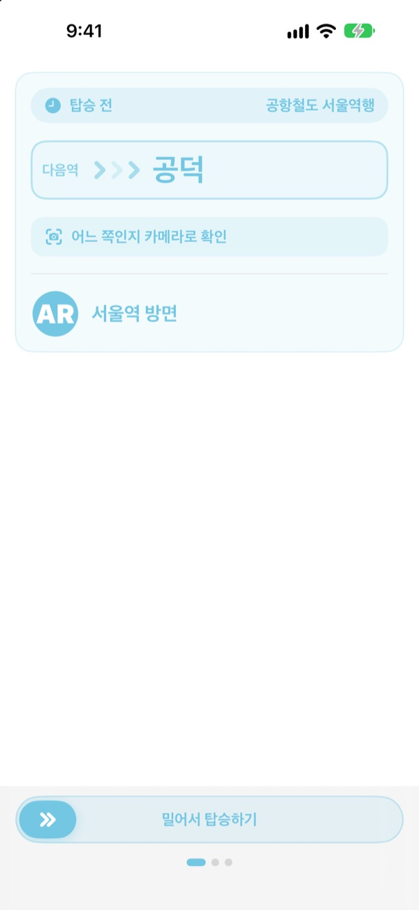
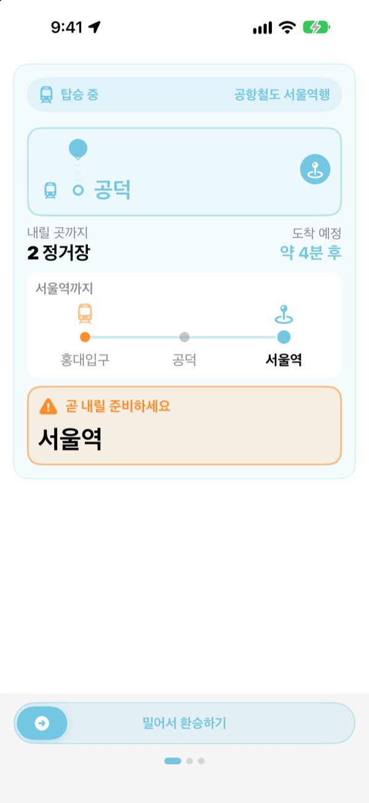
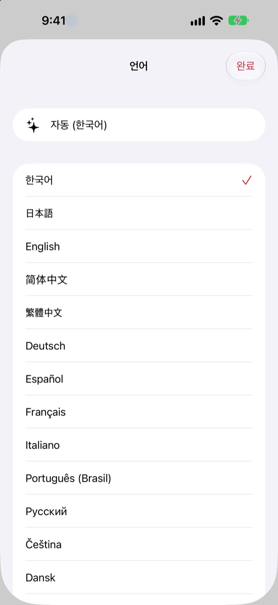

타는 방향부터
내릴 역까지
출발역과 도착역만 고르면 타야 할 열차를 승강장에 걸린 “○○행” 표시 그대로 알려 드립니다. 탑승 중에는 지금 어느 역인지 따라가다가 내릴 때가 되면 알려 드립니다.
길찾기, 타는 방향, 실시간 도착 정보는 무료입니다.

직접 타 보세요
공항철도 홍대입구역에서 출발합니다. 내릴 역을 고르고 출발하기를 누르면, 앱처럼 타는 방향과 하차 알림이 차례로 나옵니다.
승강장에서 어느 쪽 열차를 타야 할지 망설인 적 있나요?
지도 앱은 노선만 알려 주고, 승강장에는 낯선 역 이름이 적힌 “○○행” 표지판만 있습니다. 반대 방향을 타면 몇 정거장을 되돌아와야 하고, 안내방송을 놓치면 내릴 역을 지나칩니다. KORA는 탈 열차를 표지판과 같은 말로 알려 주고, 내릴 역이 가까워지면 먼저 알려 드립니다.
표지판과 같은 말로 알려 드립니다
타야 할 열차를 승강장과 열차에 적힌 “○○행” 그대로 보여 드립니다. 헷갈리면 승강장 표지판이나 열차 행선지 표시를 카메라로 비춰 보세요. 지금 타려는 방향이 맞는지 바로 알려 줍니다.
글자 인식은 기기 안에서만 이뤄집니다.

내릴 역을 놓치지 않습니다
실시간 도착 정보, GPS, 열차의 출발과 정차, 차내 안내방송을 함께 써서 지금 어느 역인지 따라갑니다. 내릴 역이 가까워지면 “곧 내릴 준비하세요”, 도착하면 “지금 내리세요!”를 진동과 함께 알려 드립니다.
잠금 화면과 Dynamic Island에서도 진행 상황이 보입니다.

23개 언어, 역 이름은 원문 그대로
앱 화면을 23개 언어로 쓸 수 있고 처음에는 휴대폰 언어를 따릅니다. 역 이름은 한글 원문과 함께 가타카나, 한자, 또는 역 표지판의 영문 표기로 보여 줘서 승강장에서 바로 맞춰 볼 수 있습니다.

시작은 세 단계면 됩니다
- 1
출발역을 정합니다
GPS로 가장 가까운 역을 찾거나 직접 고릅니다.
- 2
도착역을 고릅니다
환승, 정거장 수, 타야 할 열차가 바로 나옵니다.
- 3
출발하기를 누릅니다
내릴 때가 되면 화면과 진동으로 알려 드립니다.
권한은 이렇게 씁니다
- 위치
- 가장 가까운 역 찾기
- 카메라
- 승강장 표지판과 열차 행선지 표시를 읽어 방향 확인
- 마이크와 음성 인식
- 차내 안내방송에서 역 이름과 내리는 문 방향 알아듣기
- 동작 및 피트니스
- 열차의 출발과 정차를 감지해 현재 역을 더 정확하게
모든 권한은 선택 사항입니다. 허용하지 않아도 역을 직접 골라 경로 안내와 하차 알림을 쓸 수 있습니다. 위치, 카메라, 안내방송은 기기 안에서만 처리하고 녹음하거나 저장, 전송하지 않습니다.
길찾기는 늘 무료, 탑승 안내는 KORA Pro
무료
- 경로 검색과 환승 안내
- 타야 할 열차의 “○○행” 표시
- 실시간 도착 정보
- 카메라로 방향 확인
- 탑승 중 현재 역과 하차 안내 화면
- 처음 세 번의 여정은 Pro 기능도 모두
KORA Pro
- 모든 여정에서 잠금 화면 안내, 안내방송 인식, 하차 진동 알림
- 출구 안내: 서울 지하철 1~8호선 출구별 주변 장소
- 막차 알림: 1~9호선 막차 시간
- 캐리어 모드: 1~8호선에서 엘리베이터와 가까운 칸
한 번 결제로 계속 씁니다. 구독이 아닙니다.
무료 여정이 끝나도 탑승을 막지 않습니다. 화면 안 진행 표시는 그대로 두고 잠금 화면 안내, 안내방송 인식, 진동만 쉽니다.
자주 묻는 질문
가까운 역을 못 찾거나 엉뚱한 역이 나와요.
설정 > 개인정보 보호 및 보안 > 위치 서비스 > KORA에서 “앱을 사용하는 동안”을 고르고 “정확한 위치”를 켜 주세요. 지하나 큰 건물 안에서는 GPS가 부정확할 수 있으니, 화면 위쪽의 현재 역 카드를 눌러 역을 직접 고르면 됩니다. 위치 권한 없이도 모든 기능을 쓸 수 있습니다.
카메라 방향 확인은 어떻게 쓰나요?
경로가 나온 뒤 카메라 방향 확인을 열고, 승강장 표지판이나 열차 행선지 표시(“○○행”)를 화면에 크게 비춥니다. 한글 표시를 비출 때 가장 정확합니다. 너무 어둡거나 멀거나 비스듬하면 조금 가까이서 정면으로 비춰 보세요. 결과는 참고용이니 헷갈리면 역의 안내 표지판도 함께 확인해 주세요.
실시간 도착 정보가 안 나와요.
실시간 도착 정보는 서울 열린데이터광장이 제공하며 인터넷 연결이 필요하고, 주로 수도권 노선에서 나옵니다. 네트워크가 없거나 그 노선에 실시간 정보가 없으면 시간표 기반 추정과 GPS, 가속도계로 자동 전환해 계속 안내합니다. 경로 검색은 인터넷 없이도 됩니다.
하차 알림이 조금 빠르거나 늦어요.
지하 구간에서는 GPS 신호가 약해 현재 역 추정이 늦어질 수 있습니다. 마이크 권한을 허용하면 차내 안내방송으로 위치를 보정해 더 정확해집니다. 알림은 참고용이니 안내방송과 역 표지판도 함께 확인해 주세요.
언어는 어떻게 바꾸나요?
처음에는 휴대폰 언어를 따릅니다. 메인 화면의 역 카드(현재 역 또는 도착역)를 길게 누르면 언어 선택 창이 열리고, 23개 언어 중에서 고를 수 있습니다.
잠금 화면에 라이브 액티비티가 안 보여요.
설정 > 앱 > KORA(이전 iOS에서는 설정 > KORA)에서 “실시간 현황”이 켜져 있는지 확인해 주세요. 라이브 액티비티는 탑승 안내를 시작하면 나타나고, 앱을 완전히 종료하면 함께 끝납니다. Dynamic Island는 이를 지원하는 iPhone에서만 보입니다.
어떤 도시를 지원하나요?
수도권(서울, 경기, 인천, GTX-A, 공항철도, 신분당선, 경전철 포함), 부산, 대구, 광주, 대전의 약 930개 역입니다. 역 선택 화면 위쪽의 지역 칩으로 도시를 바꿀 수 있습니다.
한국에 가기 전에 미리 써 볼 수 있나요?
네. 출발역과 도착역을 직접 고르면 어디서든 경로, 환승, 타는 방향을 미리 확인할 수 있습니다.
KORA Pro는 구독인가요?
아니요. 한 번 결제로 계속 쓰는 평생 이용권이고 가족 공유도 됩니다. 앱을 다시 설치했다면 결제 화면에서 구매 복원을 누르면 됩니다.
개인정보는 어떻게 다루나요?
회원가입과 광고가 없습니다. 위치, 카메라, 안내방송 인식은 모두 기기 안에서 처리하며 저장하거나 전송하지 않습니다. 앱 개선을 위한 익명 이용 통계만 수집합니다.
접근성을 지원하나요?
VoiceOver와 큰 글자 크기를 지원합니다. 접근성 관련 개선 요청은 언제든 환영합니다.
역이 없거나 이름이 이상하면, 또는 궁금한 점은 mizzking75@gmail.com로 보내 주세요. 앱 버전, iPhone 모델, 이용한 역을 함께 적어 주시면 더 빨리 확인할 수 있습니다.